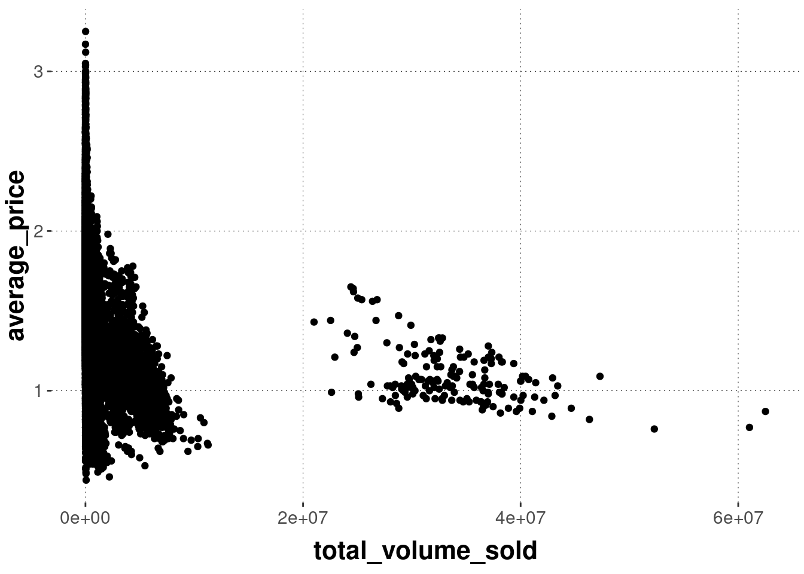
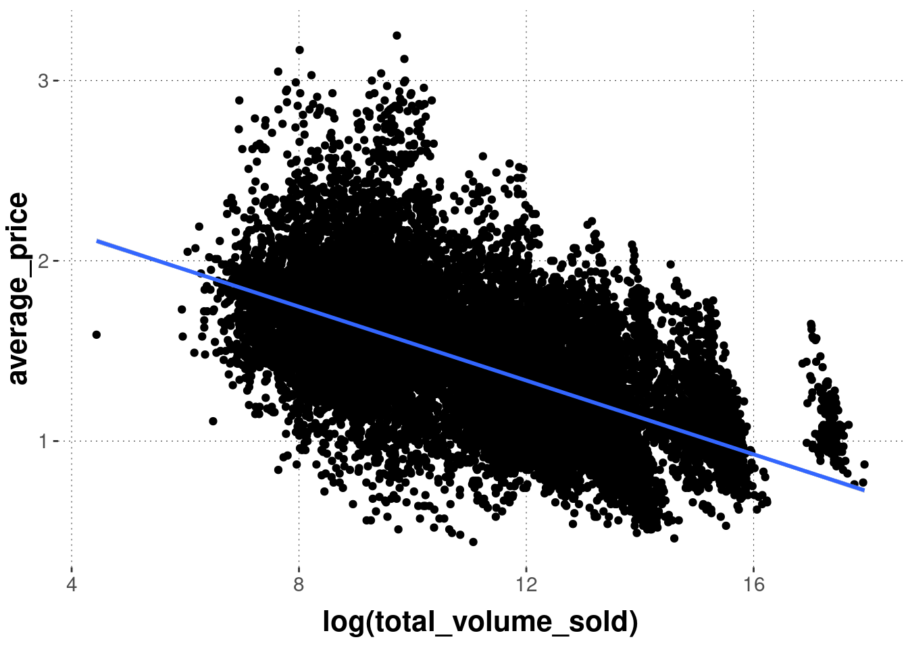
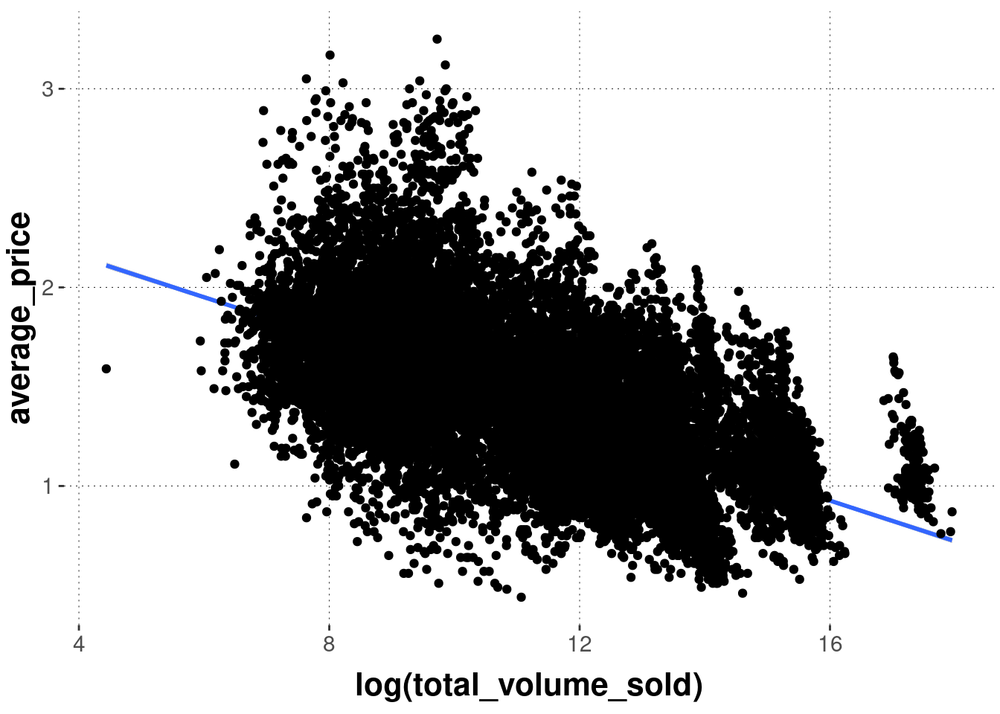
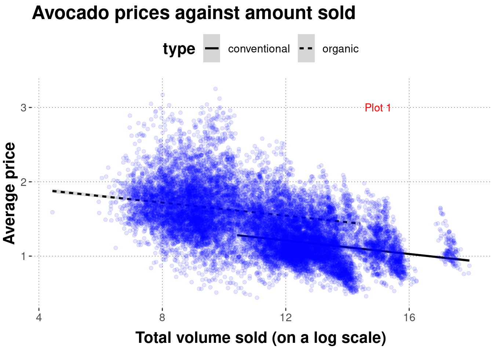
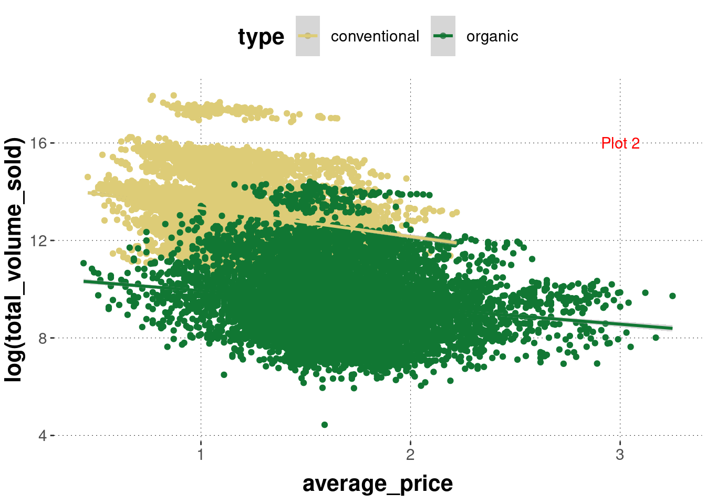
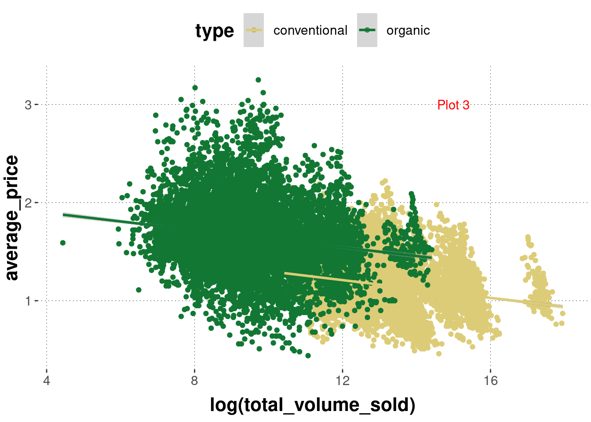

Plot 1: Code 4
Plot 2: Code 1
Plot 3: Code 2
ggplotIn this section, we will work towards a first plot with ggplot. It will be a scatter plot (more on different kinds of plots in Section 6.4) for the avocado price data. Check out the ggplot cheat sheet for a quick overview of the nuts and bolts of ggplot.
The following paragraphs introduce the key concepts of ggplot:
geom_point) and what they actually dogeom_ functions in sequenceThe section finishes with a first full example of a plot that has different layers, uses grouping, and customizes a few other things.
To get started, let’s first load the (preprocessed) avocado data set used for plotting:
The “gg” in the package name ggplot is short for “grammar of graphs”. It provides functions for describing scientific data plots in a compositional manner, i.e., for dealing with different recurrent elements in a plot in an additive way. As a result of this approach, we will use the symbol + to add more and more elements (or to override the implicit defaults in previously evoked elements) to build a plot. For example, we can obtain a scatter plot for the avocado price data simply by first calling the function ggplot, which just creates an empty plot:
The plot stored in variable incrementally_built_plot is very boring. Take a look:

As you can see, you do not see anything except a (white) canvas. But we can add some stuff. Don’t get hung up on the details right now, just notice that we use + to add stuff to our plot:29
incrementally_built_plot +
# add a geom of type `point` (=> scatter plot)
geom_point(
# what data to use
data = avocado_data,
# supply a mapping (in the form of an 'aesthetic' (see below))
mapping = aes(
# which variable to map onto the x-axis
x = total_volume_sold,
# which variable to map onto the y-axis
y = average_price
)
)
You see that the function geom_point is what makes the points appear. You tell it which data to use and which mapping of variables from the data set to elements in the plot you like. That’s it, at least to begin with.
We can also supply the information about the data to use and the aesthetic mapping in the ggplot function call. Doing so will make this information the default for any subsequently added layer. Notice also that the data argument in function ggplot is the first argument, so we will frequently make use of piping, like in the following code which is equivalent to the previous in terms of output:

Let’s take a step back. Actually, the function geom_point is a convenience function that does a lot of things automatically for us. It helps to understand subsequent code if we peek under the hood at least for a brief moment initially, if only to just realize where some of the terminology in and around the “grammar of graphs” comes from.
The ggplot package defines a layered grammar of graphs (Wickham 2010). This is a structured description language for plots (relevant for data science). It uses a smart system of defaults so that it suffices to often just call a convenience wrapper like geom_point. But underneath, there is the possibility of tinkering with (almost?) all of the (layered) elements and changing the defaults if need be.
The process of mapping data onto a visualization essentially follows this route:
data -> statistical transformation -> geom. object -> aesthetics
You supply (tidy) data. The data is then transformed (e.g., by computing a summary statistic) in some way or another. This could just be an “identity map” in which case you will visualize the data exactly as it is. The resulting data representation is mapped onto some spatial (geometric) appearance, like a line, a dot, or a geometric shape. Finally, there is room to alter the specific aesthetics of this mapping from data to visual object, like adjusting the size or the color of a geometric object, possibly depending on some other properties it has (e.g., whether it is an observation for a conventional or an organically grown avocado).
To make explicit the steps which are implicitly carried out by geom_point in the example above, here is a fully verbose but output-equivalent sequence of commands that builds the same plot by defining all the basic components manually:
avocado_data %>%
ggplot() +
# plot consists of layers (more on this soon)
layer(
# how to map columns onto ingredients in the plot
mapping = aes(x = total_volume_sold, y = average_price),
# what statistical transformation should be used? - here: none
stat = "identity",
# how should the transformed data be visually represented? - here: as points
geom = "point",
# should we tinker in any other way with the positioning of each element?
# - here: no, thank you!
position = "identity"
) +
# x and y axes are non-transformed continuous
scale_x_continuous() +
scale_y_continuous() +
# we use a cartesian coordinate system (not a polar or a geographical map)
coord_cartesian()
In this explicit call, we still need to specify the data and the mapping (which variable to map onto which axis). But we need to specify much more. We tell ggplot that we want standard (e.g., not log-transformed) axes. We also tell it that our axes are continuous, that the data should not be transformed and that the visual shape (= geom) to which the data is to be mapped is a point (hence the name geom_point).
It is not important to understand all of these components right now. It is important to have seen them once, and to understand that geom_point is a wrapper around this call which assumes reasonable defaults (such as non-transformed axes, points for representation etc.).
ggplot is the “grammar of layered graphs”. Plots are compositionally built by combining different layers, if need be. For example, we can use another function from the geom_ family of functions to display a different visualization derived from the same data on top of our previous scatter plot.30
avocado_data %>%
ggplot(
mapping = aes(
# notice that we use the log (try without it to understand why)
x = log(total_volume_sold),
y = average_price
)
) +
# add a scatter plot
geom_point() +
# add a linear regression line
geom_smooth(method = "lm")
Notice that layering is really sequential. To see this, just check what happens when we reverse the calls of the geom_ functions in the previous example:
avocado_data %>%
ggplot(
mapping = aes(
# notice that we use the log (try without it to understand why)
x = log(total_volume_sold),
y = average_price
)
) +
# FIRST: add a linear regression line
geom_smooth(method = "lm") +
# THEN: add a scatter plot
geom_point()
If you want lower layers to be visible behind layers added later, one possibility is to tinker with opacity, via the alpha parameter. Notice that the example below also changes the colors. The result is quite toxic, but at least you see the line underneath the semi-transparent points.
avocado_data %>%
ggplot(
mapping = aes(
# notice that we use the log (try without it to understand why)
x = log(total_volume_sold),
y = average_price
)
) +
# FIRST: add a linear regression line
geom_smooth(method = "lm", color = "darkgreen") +
# THEN: add a scatter plot
geom_point(alpha = 0.1, color = "orange")
The aesthetics defined in the initial call to ggplot are global defaults for all layers to follow, unless they are overwritten. This also holds for the data supplied to ggplot. For example, we can create a second layer using another call to geom_point from a second data set (e.g., with a summary statistic), like so:
# create a small tibble with the means of both
# variables of interest
avocado_data_means <-
avocado_data %>%
summarize(
mean_volume = mean(log(total_volume_sold)),
mean_price = mean(average_price)
)
avocado_data_means## # A tibble: 1 × 2
## mean_volume mean_price
## <dbl> <dbl>
## 1 11.3 1.41avocado_data %>%
ggplot(
aes(x = log(total_volume_sold),
y = average_price)
) +
# first layer uses globally declared data & mapping
geom_point() +
# second layer uses different data set & mapping
geom_point(
data = avocado_data_means,
mapping = aes(
x = mean_volume,
y = mean_price
),
# change shape of element to display (see below)
shape = 9,
# change size of element to display
size = 12,
color = "skyblue"
)Categorical distinction is frequently important in data analysis. Just think of the different combinations of factor levels in a factorial design, or the difference between conventionally grown and organically grown avocados. ggplot understands grouping very well and acts on appropriately, if you tell it to in the right way.
Grouping can be relevant for different aspects of a plot: the color of points or lines, their shape, or even whether to plot everything together or separately. For instance, we might want to display different types of avocados in a different color. We can do this like so:
avocado_data %>%
ggplot(
aes(
x = log(total_volume_sold),
y = average_price,
# use a different color for each type of avocado
color = type
)
) +
geom_point() 
Notice that we added the grouping information inside of aes to the call of ggplot. This way the grouping is the global default for the whole plot. Check what happens when we then add another layer, like geom_smooth:
avocado_data %>%
ggplot(
aes(
x = log(total_volume_sold),
y = average_price,
# use a different color for each type of avocado
color = type
)
) +
geom_point() +
geom_smooth(method = "lm")
The regression lines will also be shown in the colors of the underlying scatter plot. We can change this by overwriting the color attribute locally, but then we lose the grouping information:
avocado_data %>%
ggplot(
aes(
x = log(total_volume_sold),
y = average_price,
# use a different color for each type of avocado
color = type
)
) +
geom_point() +
geom_smooth(method = "lm", color = "black")To retrieve the grouping information, we can change the explicit keyword group (which just treats data from the relevant factor levels differently without directly changing their appearance):
avocado_data %>%
ggplot(
aes(
x = log(total_volume_sold),
y = average_price,
# use a different color for each type of avocado
color = type
)
) +
geom_point() +
geom_smooth(
# tell the smoother to deal with avocados types separately
aes(group = type),
method = "lm",
color = "black"
)Finally, we see that the lines are not uniquely associable with the avocado type, so we can also change the regression line’s shape attribute conditional on avocado type:
avocado_data %>%
ggplot(
aes(
x = log(total_volume_sold),
y = average_price,
# use a different color for each type of avocado
color = type
)
) +
geom_point() +
geom_smooth(
# tell the smoother to deal with avocados types separately
aes(group = type, linetype = type),
method = "lm",
color = "black"
)
If done with the proper mind and heart, plots intended to share (and to communicate a point, following the idea of hypothesis-driven visualization) will usually require a lot of tweaking. We will cover some of the most frequently relevant tweaks in Section 6.6.
To nevertheless get a feeling of where the journey is going, at least roughly, here is an example of a plot of the avocado data which is much more tweaked and honed. No claim is intended regarding the false idea that this plot is in any sense optimal. There is not even a clear hypothesis or point to communicate. This just showcases some functionality. Notice, for instance, that this plot uses two layers, invoked by geom_point which shows the scatter plot of points and geom_smooth which layers on top the point cloud regression lines (one for each level in the grouping variable).
# pipe data set into function `ggplot`
avocado_data %>%
# reverse factor level so that horizontal legend entries align with
# the majority of observations of each group in the plot
mutate(
type = fct_rev(type)
) %>%
# initialize the plot
ggplot(
# defined mapping
mapping = aes(
# which variable goes on the x-axis
x = total_volume_sold,
# which variable goes on the y-axis
y = average_price,
# which groups of variables to distinguish
group = type,
# color and fill to change by grouping variable
fill = type,
linetype = type,
color = type
)
) +
# declare that we want a scatter plot
geom_point(
# set low opacity for each point
alpha = 0.1
) +
# add a linear model fit (for each group)
geom_smooth(
color = "black",
method = "lm"
) +
# change the default (normal) of x-axis to log-scale
scale_x_log10() +
# add dollar signs to y-axis labels
scale_y_continuous(labels = scales::dollar) +
# change axis labels and plot title & subtitle
labs(
x = 'Total volume sold (on a log scale)',
y = 'Average price',
title = "Avocado prices against amount sold",
subtitle = "With linear regression lines"
)
Exercise 6.1: Find the match
Determine which graph was created with which code:
Code 1:
code_1 <- ggplot(avocado_data,
mapping = aes(
x = average_price,
y = log(total_volume_sold),
color = type
)
) +
geom_point() +
geom_smooth(method = "lm")Code 2:
code_2 <- ggplot(avocado_data,
mapping = aes(
x = log(total_volume_sold),
y = average_price,
color = type
)
) +
geom_point() +
geom_smooth(method = "lm")Code 3:
code_3 <- ggplot(avocado_data,
mapping = aes(
x = log(total_volume_sold),
y = average_price
)
) +
geom_smooth(method = "lm", color = "black") +
geom_point(alpha = 0.1, color = "blue") +
labs(
x = 'Total volume sold (on a log scale)',
y = 'Average price',
title = "Avocado prices against amount sold"
)Code 4:
code_4 <- ggplot(avocado_data,
mapping = aes(
x = log(total_volume_sold),
y = average_price,
linetype = type
)
) +
geom_smooth(method = "lm", color = "black") +
geom_point(alpha = 0.1, color = "blue") +
labs(
x = 'Total volume sold (on a log scale)',
y = 'Average price',
title = "Avocado prices against amount sold"
)Plot 1: 
Plot 2: 
Plot 3: 
Plot 1: Code 4
Plot 2: Code 1
Plot 3: Code 2
Wickham, Hadley. 2010. “A Layered Grammar of Graphics.” Journal of Computational and Graphical Statistics 19 (1): 3–28.
If you run this code for yourself, the output is likely to look different from what is shown here. This is because this web-book uses a default theme for all of its plots. We will come back to customization with themes later.↩︎
Notice that, as soon as we add the linear regression line, it makes sense to use the logarithm of total_volume_sold because otherwise, the fit is quite ridiculous. The logarithm helps to spread out the large number of data points where total_volume_sold is very low, and to “bring back to the flock” the data points where total_volume_sold is outliery high. It can be quite useful to use such transformations, if they are well understood. It is controversial whether such transformations should precede statistical analyses, but that is not important right now.↩︎